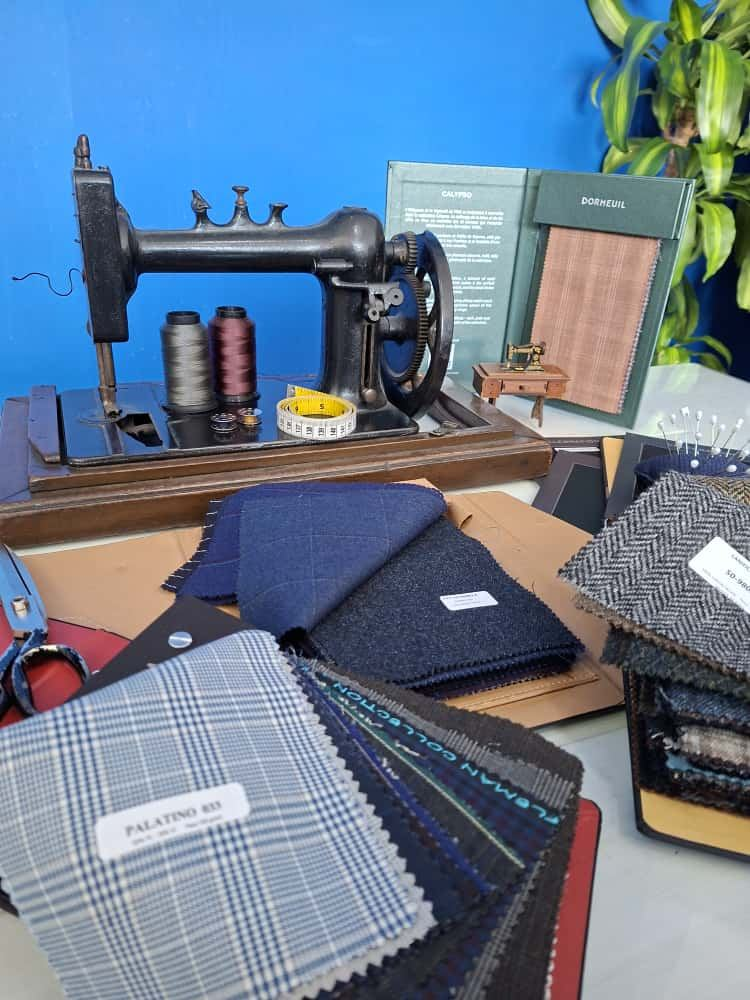
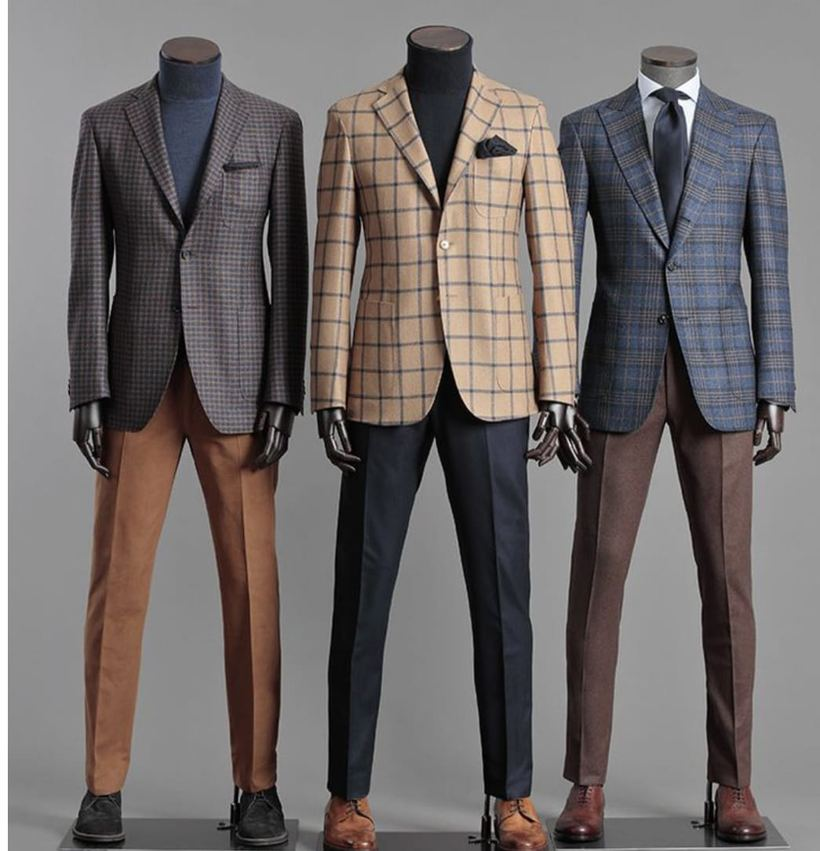
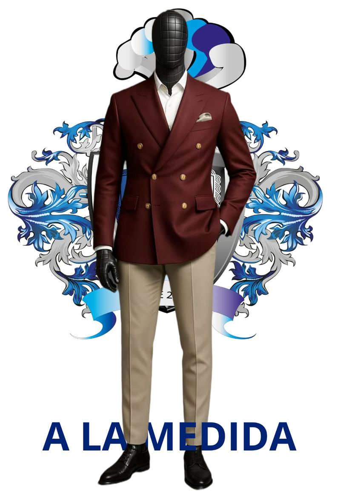
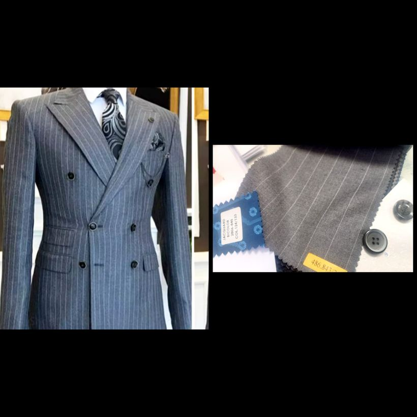
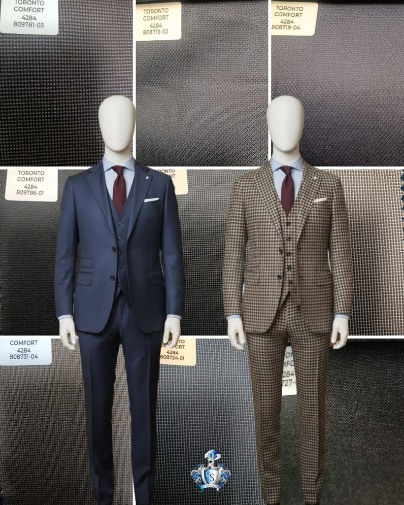
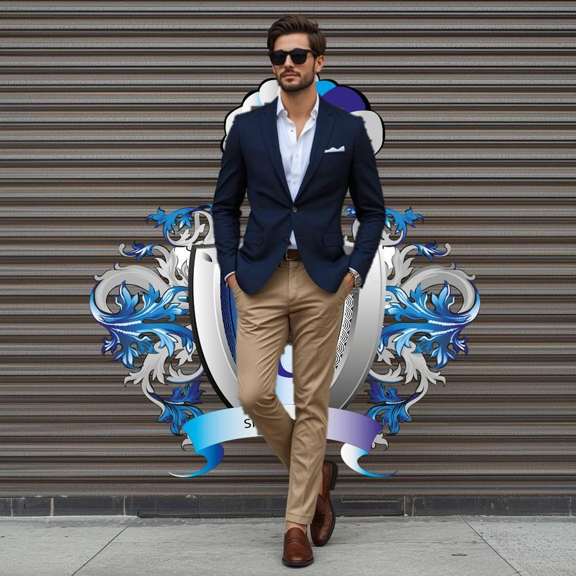

Bespoke Colombian Tailoring
Handcrafted suits from the heart of Medellín. Every stitch cut to your silhouette, every detail chosen by you.
The Atelier
From his atelier in El Poblado, Medellín, Carlos Sanchez continues a family tradition of bespoke tailoring that began in 1962. Each garment is drafted from a personal pattern, cut by hand, and finished with the patience that only true bespoke allows.
We work with the world's finest mills — and with Colombia's own linen and cotton weavers — to build suits that breathe in the tropics and command any room, from Bogotá to Milan.
A unique paper pattern, two to three fittings, and a suit that exists nowhere else in the world.
Morning coats, tuxedos and guayabera-inspired formalwear for the most important days.
Travel capsules and seasonal wardrobes built around your life, climate and calendar.
"Style makes you unique — and so does clothing made to your measure."
— Carlos Sanchez
How a suit is made
In the atelier or by guided video fitting — every number recorded twice.
A paper pattern drafted for you alone, then cut by hand from your chosen cloth.
Two to three fittings, pinned and adjusted in front of you until it sits right.
Hand-finished buttonholes and a final press — ready in six to eight weeks.

The Master Tailor
Carlos leads the third generation of a tailoring house his family began in 1962. He learned the trade in the same El Poblado workshop where he now drafts every house pattern by hand, and personally reviews each fitting before a suit leaves the atelier.
— Founder & Master Tailor, Carlos Sanchez Bespoke
As seen in
Client Sittings
From the Atelier





Follow the atelier on Instagram · @carlossanchezcouture
The Design Room
Choose every detail below. Your design updates live and is included with your quote request.
Live preview — illustrative of cloth, cut and details.
Made to your body
Enter your measurements in inches or centimetres. Colombia uses the metric system, so everything is automatically converted to centimetres for the atelier in Medellín.
📏 Use a soft cloth tape over light clothing, with a friend helping. Keep the tape level and snug but never tight, and take each measurement twice — if the numbers differ, measure once more and use the average.
Good to know
A full bespoke suit typically takes six to eight weeks, including two to three fittings. Rush timelines for weddings and events are possible on request.
Pricing depends on the cloth and construction you choose. Bespoke two-piece suits at our Medellín atelier typically start around US$1,200, with fine Italian and English cloths above that. Request a quote with your design for an exact price.
Yes. You can design your suit online, submit measurements in inches or centimetres (we convert them automatically), and complete fittings by video call. We ship worldwide.
Use a soft measuring tape over light clothing, keep the tape level and snug but not tight, and follow the guidance next to each field in our measurements form. A second person helps for chest, shoulders and sleeve. You can also book a video fitting and we will guide you live.
Yes — wedding suits, tuxedos, morning coats and ceremony formalwear are a specialty, for grooms and full wedding parties, in Colombia and abroad.
A 50% deposit begins your pattern, with the balance due at your final fitting. Because every garment is cut to your measurements, we don't offer cash refunds once cutting begins — but we do guarantee unlimited fit adjustments at no charge for 30 days after delivery, in person or by video fitting.
Visit or write
Carrera 37 #10A-32, El Poblado
Medellín, Antioquia, Colombia
Mon–Sat, 9:00–18:00 (COT)
+57 (604) 555 0173
atelier@carlossanchezbespoke.com
We serve clients in English, Spanish, French and Italian.